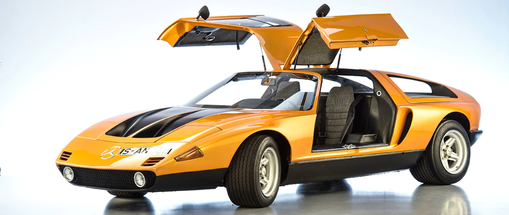

The Mercedes-Benz C111 was a series of experimental automobiles produced by Mercedes-Benz in the 1960s and
1970s. The company was experimenting with new engine technologies, including Wankel engines, diesel engines,
and turbochargers, and used the basic C111 platform as a testbed
